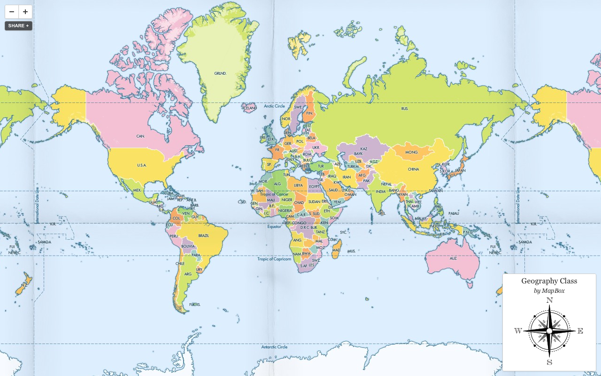
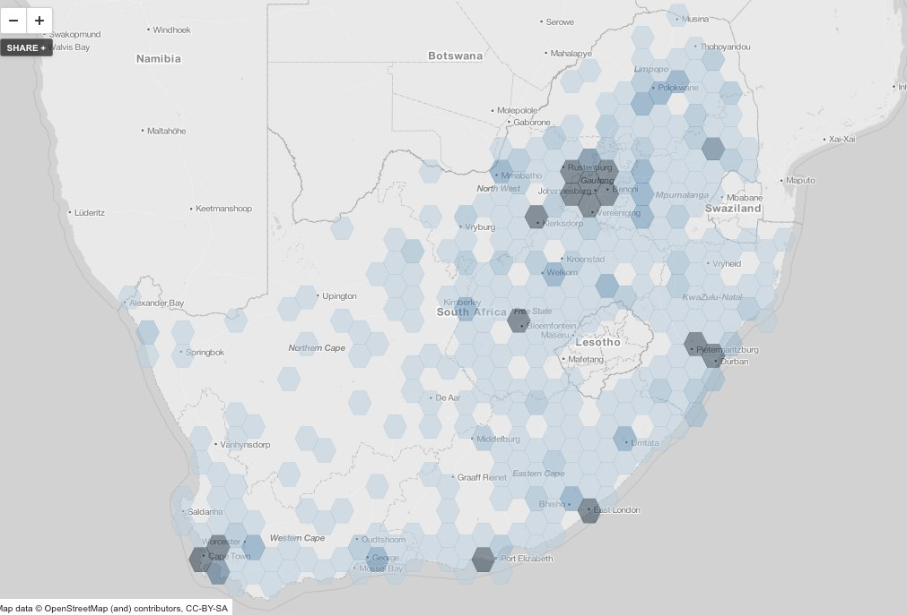

An Open Web Mapping Toolbox
Dave Cole & Tom MacWright
What kind of web maps can you make?
A base map:
With features

Or tiled overlays
Or tiled overlays
Process:
1. Sourcing data
Where do you find reliable open data?
2. Processing data
Adding geographic information, projections, summarization
3. Design
visualizing the data; telling a story
4. Map distribution
rendering → serving tiles → interfaces on web & mobile
Where to find open data:
OpenStreetMap
openstreet
map.org
US Census
census.gov/
geo/www/tiger
Local government open data
Natural Earth
http://www.natural
earthdata.com
Data you create
Like a spreadsheet or list of addresses
Processing data:
Tools
QGIS, ORG / GDAL, PostGIS, scripting
Formats
shp, geojson, kml, geotiff, csv
Geocoding
55 4th Street, San Francisco, CA 94103 ->
{
lng: -122.404883,
lat: 37.785034
}
Projections
Converting a 3d globe to a flat map
Spherical mercator

Albers equal area
Summarization
Viewing data in aggregate
Pivot tables
Aggregate records of data on an attribute
Points in areas
Nearest neighbors
Gridding

Designing the map
Applying styles to data: TileMill and Carto
Zoom-dependent design: What to show and when
Interactive features: overlays add context
The Client Side
putting web maps on web pages
generally Javascript libraries that deal in images
lots of options:
OpenLayers
established, monolithic, 'hefty'
Leaflet
OpenLayers post-web renassiance & workout time
Modest Maps
nothing but tiles: wafer thin & light
'Theme'
open source libraries > their © equivalents
// The world-famous
// Google Maps API
new google.maps.Map($('map')[0], {
zoom: 8,
center: new google.maps.LatLng(
-34.397, 150.644),
mapTypeId: google.maps.MapTypeId.ROADMAP
});
// Leaflet with MapBox Streets
var mylayer = 'http://a.tiles.mapbox.com/v3/tmcw.map-rnesfyru';
var map = new L.Map('map', {
center: new L.LatLng(-34.397, 150.644),
zoom: 8,
layers: [new L.TileLayer(mylayer + '/{z}/{x}/{y}.png')]
});'red dot fever'
// Making a marker in Google Maps
var marker = new google.maps.Marker({
position: new google.maps.LatLng(-34.397, 150.644),
map: map
});
// Making a marker in Leaflet
map.addLayer(new L.Marker(new L.LatLng(-34.397, 150.644)));
Performance
Multiple kinds.
Client-side
Client-side
Minimize page weight via magic.
Client-side
page weight = #/elements + kb/data + ms/javascript
Client-side
magic = MapBox's UTFGrid, Canvas
Server-side
Server-side
Maximize clients × (maps/sec)
Server-side
Cache, optimize, distribute
Server-side
TileMill renders maps - then 'just' distribute tiles
Server-side
Never WMS again; tiles are cacheable and distributable
Tiled overlays: when design and scale matter
Chrolopleths across thousands of features
Load data, classify on a certain field
Use color or patterns to quantify values
Show millions of points precisely without sacrificing speed
Other possibilities: dot densities; custom shapes
Serving tiles == serving images
(and maybe interactivity)
Mapnik -> cached images